照片在我相机中，周一回家后发，现在在张家界，明日登山。
凌晨4点到家，冲了个澡，睡了一会儿，将图片稍作整理，先将凤凰的照片放上来，凤凰的生活用水排水系统正在改造，所以沱江的水是黄色[泥土]加脏色[垃圾不少]的。
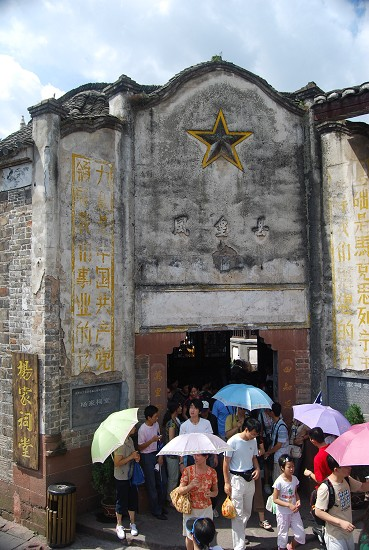
到凤凰是下午4点多钟，吃过晚饭之后和老婆孩子一起到古镇上转了一圈，也许是对丽江的四方街记忆太深刻了，总觉得这里比不上四方街
走进凤凰第一个看到的就是这个水车，和四方街太像了。
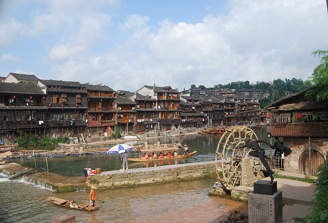
有位老伯正在沱江边写生
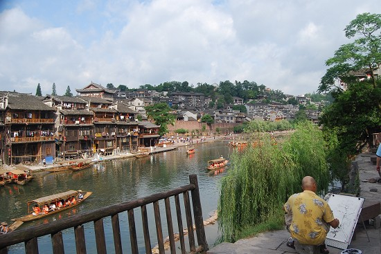
沱江上的船工
下面来一组沱江两岸景色
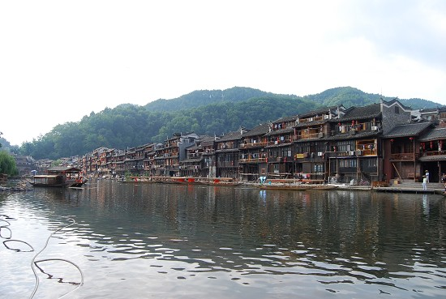
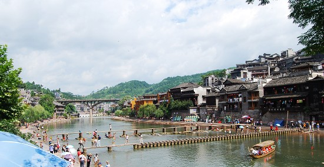
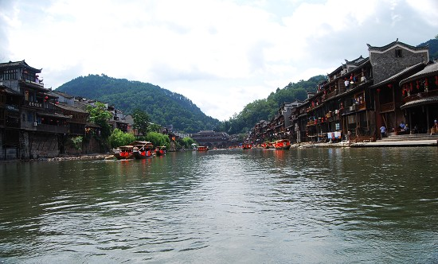
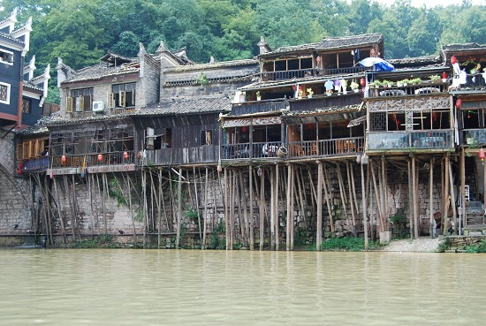
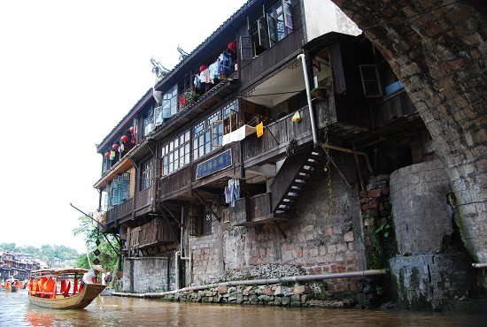
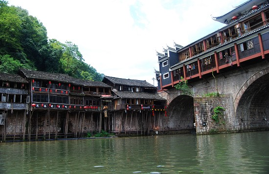
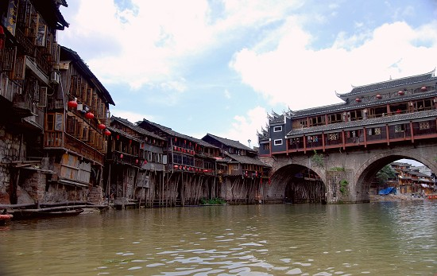
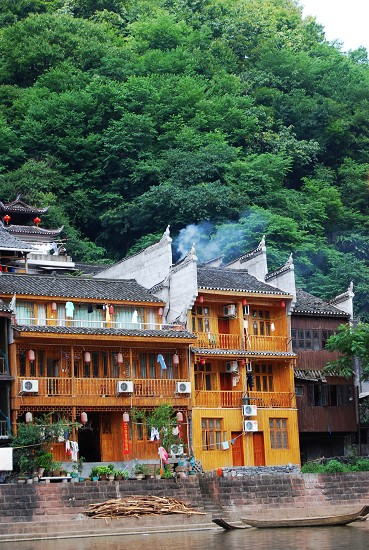
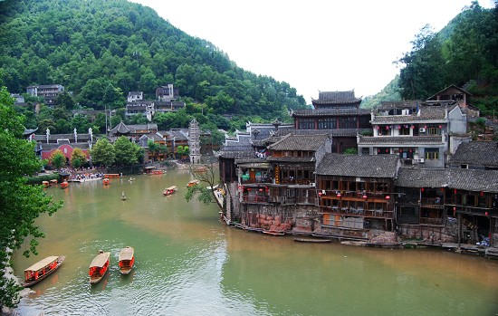
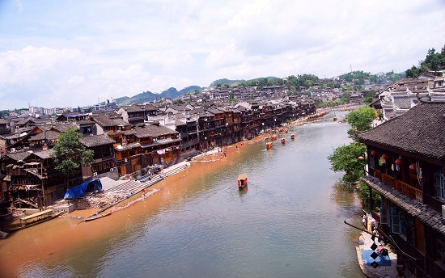
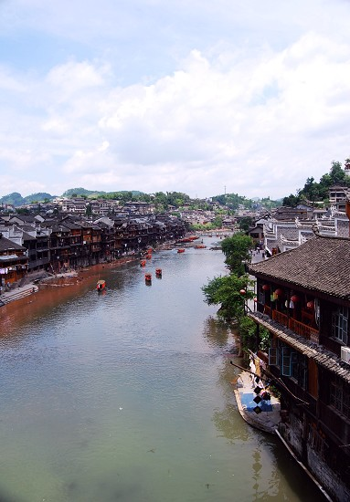
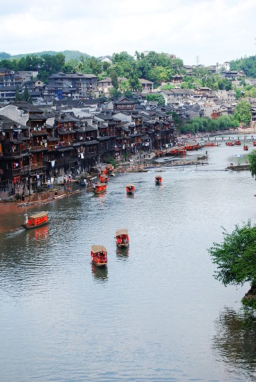
小树在沈从文故居拍的照片

图片刚刚更新
真羡慕有志，可以带老婆孩子去度假。图片很漂亮，很有民俗风情。